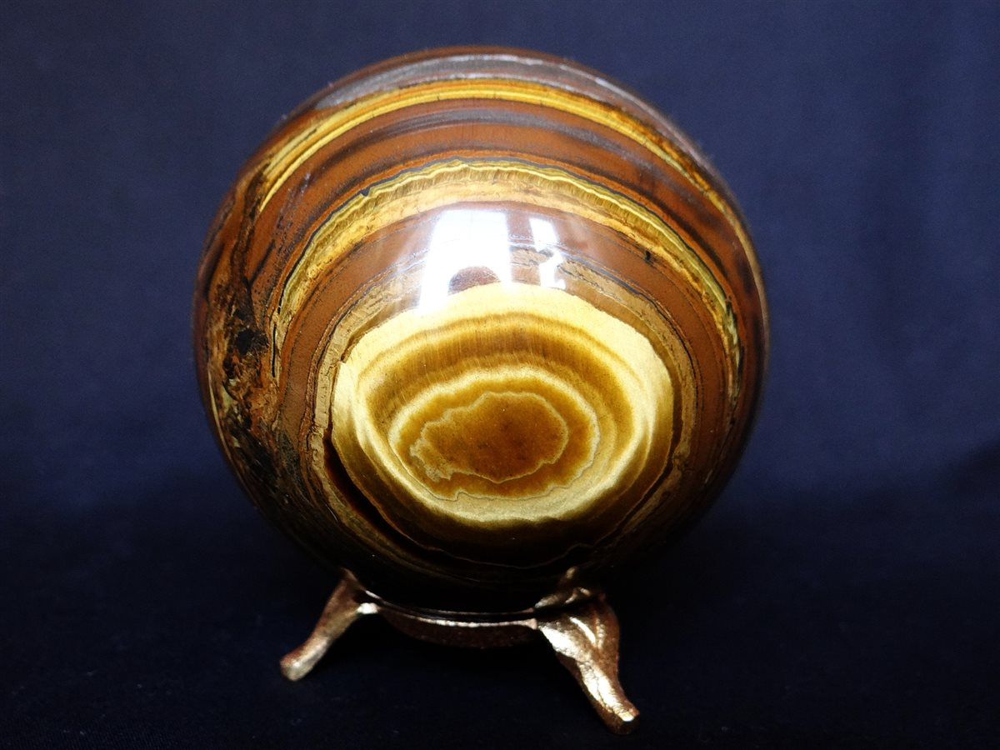
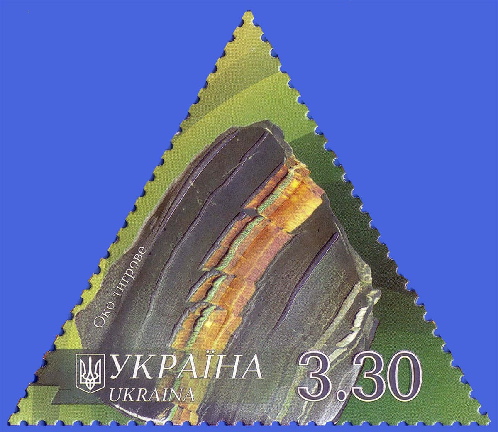

Tygrysie oko
Tiger's Eye · SiO₂ + Fe₂O₃ · kwarc chatoyantowy



Twardość
6,5–7 Mohs
Układ krystaliczny
Trygonalny
Skład
SiO₂ + limonit, goetyt
Barwa
Złocisto-brązowe pasy
Efekt optyczny
Chatoyancy (kocie oko)
Połysk
Jedwabisty
Opis i historia
Tygrysie oko to kwarc chatoyantowy — pseudomorfoza, w której włókna niebieskiego amfibolu (krokidolit) zostały zastąpione przez kwarc i tlenki żelaza (limonit, goetyt), zachowując przy tym włóknistą strukturę. Efekt optyczny zwany chatoyancy (fr. chat = kot) przypomina pionową źrenicę kota lub tygrysa — jedwabisty połysk przesuwa się po kamieniu niczym oczy drapieżnika.
Starożytni Egipcjanie wierzyli, że tygrysie oko uosabia boskie spojrzenie boga Ra i boga nieba Horusa — umieszczali go w oczach posągów bóstw, by tchnąć w nie boski wzrok. Kamień był jednym z ulubionych talizmanów wojowników starożytności: nosili go żołnierze Egiptu, Rzymu i Chin, wierząc, że nadaje im odwagę i chroni przed śmiercią na polu bitwy.
Gdzie występuje
- Republika Południowej Afryki — Prowincja Północna (Northern Cape, okolice Groblershoop); dostarcza ok. 80% światowego wydobycia, monumentalne formacje
- Australia — Pilbara (Australia Zachodnia); bardzo twarde, doskonałe okazy
- Indie — Rajasthan; tańsze okazy masowej produkcji
- USA — Arizon i California; rzadsze okazy
- Birma (Myanmar) — nieliczne okazy jubilerskie
- Namibia — okazy podobne do południowoafrykańskich
Odmiany: Tygrysie oko złote (klasyczne, złocistobrązowe) — odwaga i siła. Jastrzębie oko (niebieskie, krokidolit) — intuicja i jasnowidztwo. Bycze oko (czerwone, przez podgrzewanie) — namiętność i energia. Niebieskie jastrzębie oko to najrzadszy i najcenniejszy wariant.
Właściwości lecznicze i metafizyczne
- Odwaga i siła: dodaje pewności siebie i odwagi w obliczu trudności; wspomaga działanie pomimo strachu
- Fokus i koncentracja: poprawia zdolność koncentracji i jasność umysłową przy podejmowaniu decyzji
- Motywacja: przełamuje prokrastynację, dodaje energii do działania i realizowania celów
- Równowaga emocjonalna: łączy ziemskie uziemienie z niebiańskim spojrzeniem — daje perspektywę bez emocjonalnego zamroczenia
- Obfitość materialna: przyciąga finansowe okazje i pomyślność, szczególnie w biznesie
- Zdrowie: tradycyjnie stosowany przy problemach z oczami, gardłem i trawieniem
Właściwości ochronne
- Klasyczny amulet ochronny: od tysięcy lat jeden z najpowszechniej używanych kamieni ochronnych na świecie — noszony przez żołnierzy, podróżników i mężczyzn narażonych na niebezpieczeństwo
- Ochrona przed złym okiem: żółto-złote połyskliwe oko kamienia odpędza zazdrosne spojrzenia i złe uroki
- Ochrona podczas podróży: szczególnie polecany w samochodach i przy podróżach — chroni przed wypadkami i złodziejami
- Ochrona biznesowa: talizman chroniący interesy i transakcje finansowe; odpędza oszustwo i zdradę
- Odczytywanie intencji: wzmacniając intuicję, pomaga „przejrzeć" ludzi o złych zamiarach zanim wyrządzą szkodę
Czakry
Pielęgnacja i ładowanie
- Czyszczenie: woda (toleruje krótki kontakt), dym, dźwięk
- Ładowanie: słońce jest idealne — tygrysie oko czerpie energię ze słońca. Rano wystawione na kilka godzin słonecznego światła ładuje się optymalnie
- Uwaga: krokidolit (nieobrobiony materiał wyjściowy dla niebieskiego jastrzębiego oka) zawiera azbest — nie używaj surowego krokidolitu bez obróbki jubilerskiej
Ciekawostki
- Chatoyancy w tygrzym oku pochodzi z mikroskopijnych równoległych kanałów, przez które przechodzi światło — te same kanały powodują, że kamień „mruży oczy" gdy go obracasz
- Żołnierze Legionu Rzymskiego nosili tygrysie oko wyryte w formie oczu boga Mars — wierzyli, że bóg wojny widzi przez kamień i ochrania ich w walce
- W fengshuigotyckim tygrysie oko jest uważane za talizman ochronny dla całego domu — figurki tygrysów z tygrzego oka umieszczane przy wejściu
- Tygrysie oko jest oficjalnym kamieniem stanu Dakota Południowa (obok różowego kwarcu)